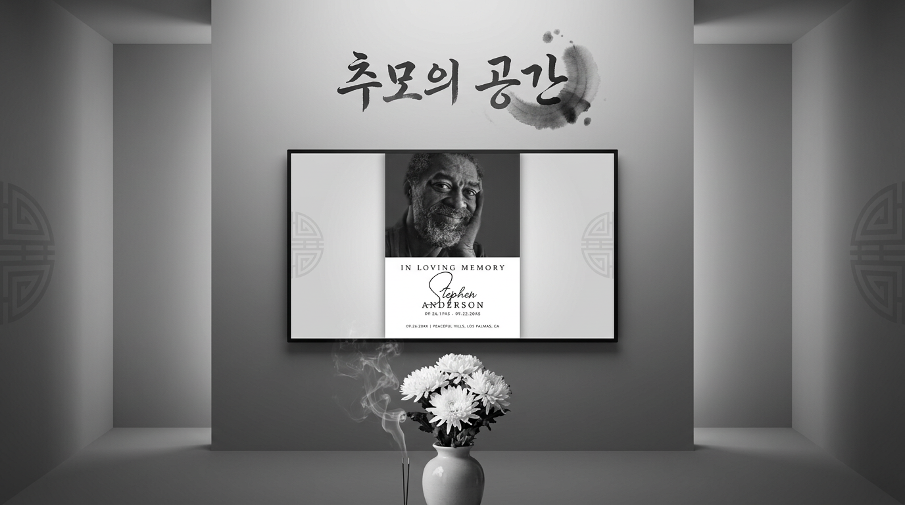

부고 안내
문자, 링크, QR로 장례식장 위치와 일정을 간편하게 공유합니다.
더 나은 서비스를 제공하기 위해 현재 시스템의 기능 고도화 작업을 진행 중입니다.
원활한 서비스 환경을 구축하기 위한 과정이오니 이용자 여러분 양해 부탁드립니다.

이루소 추모 서비스
장례 안내부터 온라인 조문, 추모글, 사진과 영상 보관까지 가족이 편안하게 관리할 수 있는 디지털 추모 시스템입니다.
Service Overview
이루소 추모 시스템은 갑작스러운 순간에도 부고와 장례 일정을 빠르게 공유하고, 멀리 있는 지인도 온라인으로 조문할 수 있도록 돕습니다. 남겨진 사진과 이야기는 가족 승인 기반으로 보존되어 시간이 지나도 안전하게 다시 꺼내볼 수 있습니다.
문자, 링크, QR로 장례식장 위치와 일정을 간편하게 공유합니다.
사진, 영상, 약력, 가족 메시지를 한 화면에서 정돈합니다.
공개 범위와 게시 승인 권한을 가족 중심으로 세밀하게 설정합니다.
방문이 어려운 분도 추모글과 마음을 남길 수 있습니다.
Memorial Features
조문객에게는 간편하고, 가족에게는 안전한 운영 도구가 되도록 구성했습니다.
고인의 사진, 약력, 가족 인사말, 추모글을 하나의 전용 페이지로 제공합니다.
장례식장 안내, 발인 시간, 주차 정보까지 링크와 QR로 빠르게 전달합니다.
온라인 헌화, 추모 메시지, 비공개 가족 메시지를 상황에 맞게 받을 수 있습니다.
가족이 남기고 싶은 순간을 고화질 이미지와 영상으로 정리해 보존합니다.
전체 공개, 링크 공개, 가족 공개 등 민감한 기록을 안전하게 관리합니다.
개설 상담부터 자료 등록, 문구 정리, 장례 후 보존까지 담당자가 도와드립니다.
추모관 미리보기
언제나 곁에 있고 싶어 찾아봐도, 사진속에 환히 웃고 계실 수 있습니다.
몇분 또는 몇달 전에 남긴 글소중한 사진과 영상을 함께하고 싶은 사람들과, 공유합니다.
사진, 영상, 추억 모두 저장빈소, 입관, 발인, 장지 정보를 모바일에서 바로 확인합니다.
장례 일정과 공유 링크 제공Memorial Room
추모관은 링크 한 장으로 어디서나 접속할 수 있습니다. 가족은 남겨진 글을 승인하거나 비공개로 보관할 수 있고, 장례 후에도 기록을 계속 업데이트할 수 있습니다.
Process
필요한 정보만 빠르게 정리해 가족의 부담을 줄입니다.
장례 일정, 공개 범위, 필요한 기능을 확인합니다.
고인 정보, 사진, 가족 인사말, 장례식장 정보를 정리합니다.
완성된 링크와 QR을 문자, 카카오톡, 인쇄물로 활용합니다.
조문록과 앨범을 가족이 계속 관리하고 보관합니다.
Care Packages
기본 부고형부터 가족 기록 보존형까지 필요한 만큼 선택할 수 있습니다.
Contact
필요한 일정과 공개 범위를 남겨주시면 담당자가 확인 후 안내드립니다.
급한 부고 페이지는 우선 개설 후 자료를 순차 보완할 수 있습니다.